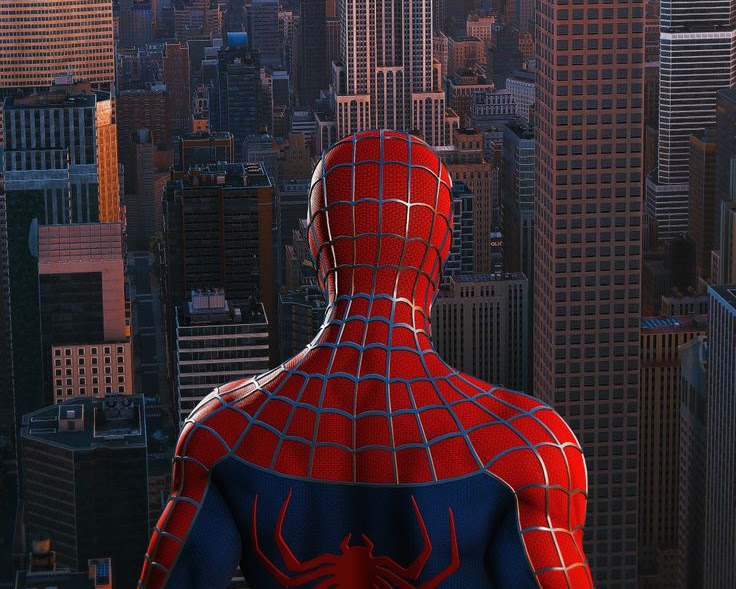

Enquanto patrulhava os telhados de Nova York, o Homem-Aranha encontra uma carta misteriosa que descreve uma ameaça iminente. A carta menciona que um vilão desconhecido planeja destruir a cidade com uma arma secreta. Agora, cabe a Peter Parker impedir que isso aconteça!
Ao chegar no laboratório de Oscorp, você encontra pistas que indicam que o Duende Verde pode estar por trás da ameaça. Você precisa decidir entre confrontar Norman Osborn ou tentar encontrar mais informações sem ser visto.
No submundo de Nova York, você encontra um grupo de vilões liderados pelo Rei do Crime. Eles sabem que você está se aproximando e têm algo em mente. Você deve agir rápido antes que eles se preparem para um ataque.
Ao confrontar Norman Osborn, ele revela que foi o Duende Verde quem armou a ameaça, mas o verdadeiro inimigo é algo muito mais sinistro. Ele oferece uma aliança temporária para enfrentar o verdadeiro vilão.
Enquanto investiga o laboratório, você descobre um dispositivo que pode desativar a arma secreta do vilão. Porém, o Duende Verde aparece e você precisa enfrentá-lo para conseguir escapar com as informações.
Ao enfrentar o Rei do Crime, ele revela que a ameaça não é apenas uma arma, mas um exército de robôs controlados por um novo vilão. Você precisa encontrar a fonte dessa ameaça antes que o exército seja ativado.
Enquanto segue discretamente, você encontra um túnel secreto que leva a uma caverna onde um novo vilão, o Mysterio, está criando ilusões para enganar a cidade. Você precisa desvendar o truque dele e desarmar os planos.
Com a ajuda de Norman Osborn, você consegue desativar parte da ameaça. Mas, ao sair do laboratório, uma nova ameaça surge: Venom está atacando a cidade! Você precisa decidir se vai ajudar Osborn ou enfrentar Venom sozinho.
Ao enfrentar Mysterio, você consegue desvendar suas ilusões e descobrir que ele é apenas um peão de um vilão maior. Ele revela a localização da verdadeira ameaça: uma base secreta do Doutor Octopus.
Você enfrenta Venom em uma batalha épica, mas ao derrotá-lo, você descobre que ele estava sendo controlado por um vilão ainda mais perigoso, o Carnificina. A luta está longe de acabar!
Ao alinhar-se com Osborn, você descobre que o verdadeiro vilão é o Dr. Octopus, que está manipulando as mentes dos vilões para executar seus planos malignos. Juntos, você e Osborn devem atacar a base de Octopus e impedir seus planos.
Na base secreta do Doutor Octopus, você encontra planos para uma arma que pode destruir a cidade inteira. Você deve desativá-la antes que seja tarde demais, mas Octopus não vai deixar você sair facilmente!
Ao derrotar o Carnificina, você descobre que a ameaça final está relacionada a um plano de dominação global do Dr. Octopus, que está criando uma super-arma para controlar o mundo. Agora, é a sua chance de derrotá-lo de vez!
Com a derrota do Dr. Octopus e a salvação de Nova York, você retorna aos telhados da cidade. A aventura pode ter acabado por agora, mas sempre haverá novos vilões e ameaças para o Homem-Aranha enfrentar. E, com grandes poderes, vêm grandes responsabilidades!
